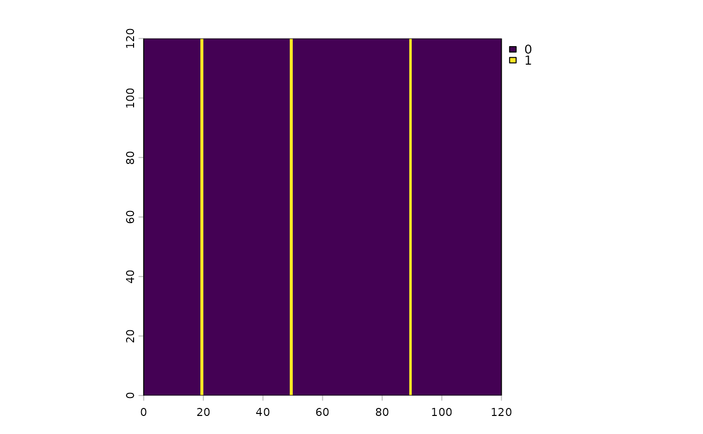

Turns a grayscale image into a binary one, either against a single
image-wide level (method = "global") or against the local
brightness around each pixel (method = "adaptive"). A separate
deblur = TRUE mode instead separates two layers of a segmented
image.
Usage
image_threshold(
img,
threshold = 0.4,
method = "global",
adaptive_k = 1.15,
window_size = 51,
select_layer = 2,
mask_layer = 1,
binary_01 = FALSE,
deblur = FALSE
)Arguments
- img
SpatRaster object.
- threshold
Fraction of the global maximum, between 0 and 1, used by
method = "global"and bydeblur = TRUE. Not used bymethod = "adaptive", which takesadaptive_kinstead.- method
"global"or"adaptive". Ignored whendeblur = TRUE.- adaptive_k
Multiple of the local mean a pixel must reach to count as foreground, for
method = "adaptive"only. Must be above 1 for the method to separate anything; see the section above.- window_size
Odd integer, the side of the local-mean box in pixels, for
method = "adaptive"only.- select_layer
Integer or NULL. Which layer to threshold or deblur. If NULL and the image is multilayer, the mean of all layers is used.
- mask_layer
Integer or NULL. If set, this layer is thresholded against its own level rather than against
select_layer's.- binary_01
Logical. If TRUE, the output is 0/1; if FALSE, it keeps the maximum value of the input.
- deblur
Logical. If TRUE, runs the deblurring mode instead of thresholding.
Global thresholding
A pixel is foreground when it is at least threshold times the
brightest value in the image. One level for the whole image, so it only
works when the illumination is even: a flatbed scan with a bright center
and dark corners has no single level that is right everywhere.
Adaptive thresholding
A pixel is foreground when it is at least adaptive_k times the mean
of the window_size x window_size box around it. The
reference level follows the illumination, so a brightness gradient leaves the
decision unchanged.
Two constraints decide whether it works, and both are properties of the image rather than preferences:
adaptive_k must exceed 1. In a window holding only
background the local mean is the background level, so background pixels
sit on both sides of it. At adaptive_k = 1 half of a root-free patch
comes out as root; below 1 nearly all of it does. The margin needed above 1
scales with the background noise: on test images with a background
coefficient of variation of 5%, adaptive_k = 1.15 leaves 0.1% of
a root-free patch marked, while 1.05 leaves 16%. The useful range
runs from roughly 1 + 3 * cv up to the root-to-background brightness
ratio; past that ratio the roots fail their own test and nothing is found.
Across test images spanning root/background contrasts of 1.3 to 2.2 and
background CVs of 2% to 10%, the best value fell between 1.10 and 1.20.
window_size must be large compared with the widest root.
The window average includes the root itself, so a root that fills much of
its own window raises its own reference level and is rejected. With roots up
to 9 px wide, F1 against a known mask rose from 0.54 at
window_size = 15 to 0.90 at 51 and 0.96 at 101, and the useful
adaptive_k rose with it, from 1.05 to 1.20, as the reference level
stopped being contaminated. A window about ten times the widest root is a
reasonable starting point; there is no penalty for going well beyond that,
because the cost is flat in window_size and the reference level still
tracked an eightfold illumination gradient at window_size = 151.
What neither method can do
Both methods mark pixels that are brighter than a reference, so they
separate bright features on a darker background and nothing else. Where root
and soil have the same brightness, no threshold of either kind can tell them
apart, and the useful range for adaptive_k described above is empty:
its lower bound sits above its upper bound. The bundled minirhizotron scan
is such an image. Measured against the matching segmentation, its roots
average 1.07 times the soil brightness, while the soil's own coefficient of
variation runs from 0.23 to 0.93 across the frame – the soil texture varies
several times more than root differs from soil – and adaptive thresholding
reaches an F1 of about 0.1 there. That is a property of the image rather
than of the implementation. Scans like it need a trained segmenter such as
RootDetector, whose binary output the rest of Rootopia reads directly.
Deblurring
deblur = TRUE ignores method. It subtracts
select_layer from mask_layer and thresholds both at
threshold times the maximum of select_layer, which separates
in-focus structure from an out-of-focus halo in a two-layer segmented image.
Examples
img = terra::rast(seg_Oulanka2023_Session03_T067)
image_threshold(img, threshold = 0.3, method = "global")
#> class : SpatRaster
#> size : 1161, 4900, 3 (nrow, ncol, nlyr)
#> resolution : 1, 1 (x, y)
#> extent : 0, 4900, 0, 1161 (xmin, xmax, ymin, ymax)
#> coord. ref. :
#> source(s) : memory
#> names : lyr.1, lyr.2, lyr.2
#> min values : 0, 0, 0
#> max values : 255, 255, 255
image_threshold(img, threshold = 0.4, select_layer = 2, mask_layer = 1, deblur = TRUE)
#> class : SpatRaster
#> size : 1161, 4900, 3 (nrow, ncol, nlyr)
#> resolution : 1, 1 (x, y)
#> extent : 0, 4900, 0, 1161 (xmin, xmax, ymin, ymax)
#> coord. ref. :
#> source(s) : memory
#> names : lyr.1, lyr.2, lyr.2
#> min values : 0, 0, 0
#> max values : 255, 255, 255
# Adaptive thresholding, on a small image that meets both conditions above:
# the background falls from 0.40 to 0.11 across the frame, a 3.6-fold range
# no single global level can follow, and three 1 px roots sit at twice their
# own local background. The window is far wider than the roots, and the
# multiplier is above 1.
m <- outer(seq(1, 0.4, length.out = 120), seq(1, 0.7, length.out = 120)) * 0.4
m[, c(20, 50, 90)] <- m[, c(20, 50, 90)] * 2
bw <- image_threshold(terra::rast(m), method = "adaptive",
adaptive_k = 1.15, window_size = 31, binary_01 = TRUE)
terra::plot(bw)
